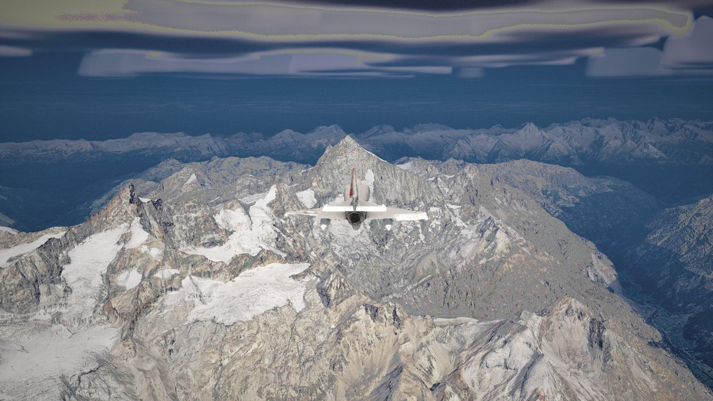
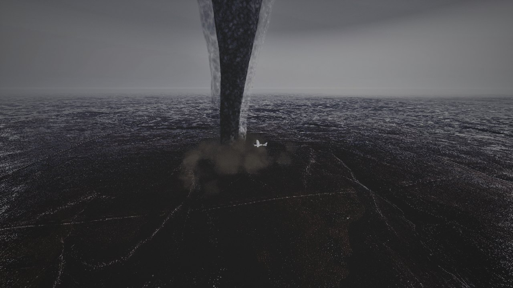
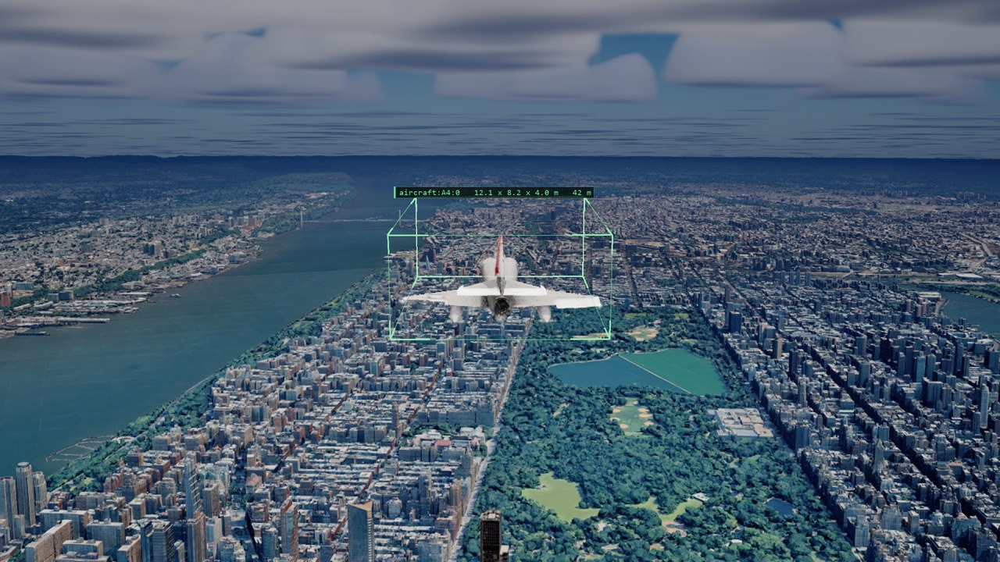
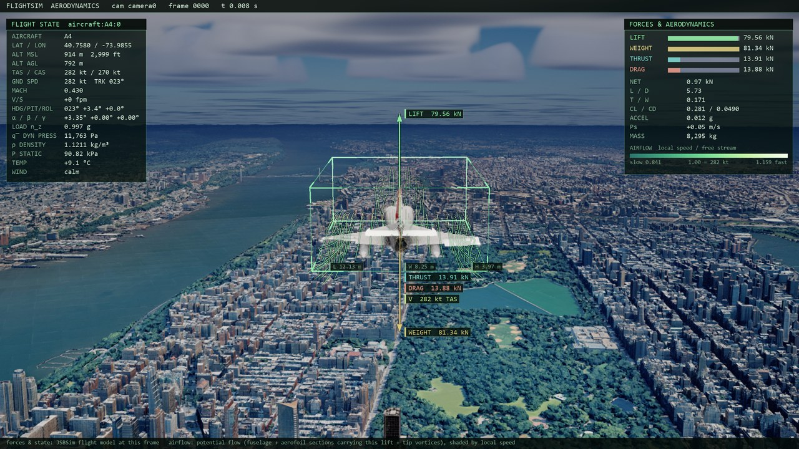
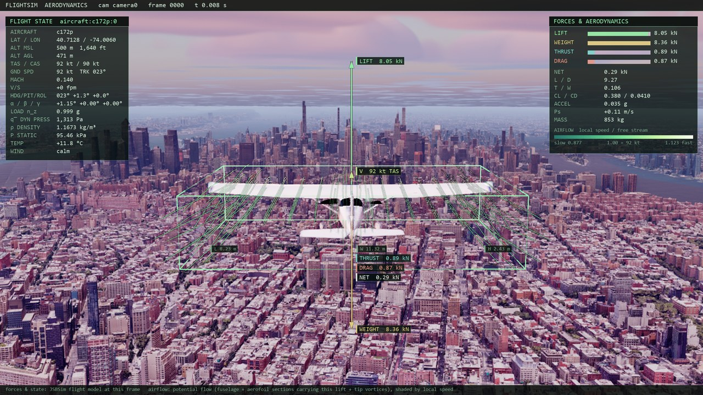

Dear Dr. Bhattacharya and Michael,
I am pleased to submit the final deliverable for the FlightSim project. FlightSim is a research-grade flight simulation and synthetic-data system: a user describes a flight in plain English, and the system flies it with a physics model, renders it over real-world terrain, and delivers a labelled, verified dataset.
1. Natural-language scenario generation
A plain-English prompt becomes a validated, reproducible scenario specification. Named places are located on the map, a turn described in the prompt becomes a route the autopilot flies, and an AI auto-fix completes vague prompts and corrects ones that cannot run.
2. Physics-based flight simulation
Every flight is computed by the JSBSim flight-dynamics model. Scenarios can specify a non-standard atmosphere and humidity, payload, fuel and centre of gravity, failures, icing, wake turbulence, turbulence and layered wind. Checked against published data, the Cessna 172 stall speed is within 4 % and the A-4E Skyhawk top speed within 3 %.
3. Photorealistic rendering over real terrain
Unreal Engine 5.7 renders each flight over real terrain and 3-D city tiles (Grand Canyon, Yosemite, the Alps, New York, San Francisco and more). Time of day sets the sun correctly for the place and date, and weather includes clouds, rain, thunderstorms and tornadoes. There are five aircraft (J-11A, A-4E Skyhawk, Airbus A320, Boeing 747, Cessna 172) and chase, cockpit and tower views.
4. Annotated dataset pipeline
Every frame is labelled with 2-D and 3-D bounding boxes for the aircraft and any visible payload, plus keypoints, truncation, occlusion and the horizon line, alongside segmentation masks and depth. Datasets export to COCO, KITTI, YOLO, Pascal VOC and WebDataset with a dataset card. Each run is checked automatically before export: a clean run passes all 35 checks, and an unverified run is refused.
5. 3-D flight analysis
For every frame the system draws three analysis pictures from the flight model's state: Plain (the 3-D bounding box), Detailed (lift, weight, thrust and drag vectors, airflow, and flight-state and aerodynamics panels) and Scene (terrain contours, ground grid, flight path and environment). Behind them are per-frame JSON data, a physics.csv for each clip, overlay videos and an interactive 3-D viewer.
6. One-command setup and web app
A single launcher installs, checks and builds everything on a pinned toolchain, then opens a browser-based web app; normal use needs no command line. A fresh clone completed a hands-off run that passed all 35 checks. The codebase is covered by 3,752 automated tests.







Dr. Bhattacharya, thank you for giving us the opportunity to work on this project. Being trusted with a project of this scope has been one of the most valuable experiences of my studies, and I am grateful for the confidence you placed in our team.
Michael, thank you for constantly keeping us in the loop and for helping us through every phase. Your feedback, patience and quick answers whenever we were stuck kept the project moving and made a real difference to the final result.
I have learned a great deal on this journey: flight dynamics and how to check a model against published data, real-time rendering in Unreal Engine, building and verifying a labelled dataset, and, above all, how to take a large technical project from an idea through several phases to a working system. I will carry these lessons into everything I do next.
Please let me know if there are any new opportunities, projects or anything else I can help with.
Best regards,
Dhruva Valluru
FlightSim Project